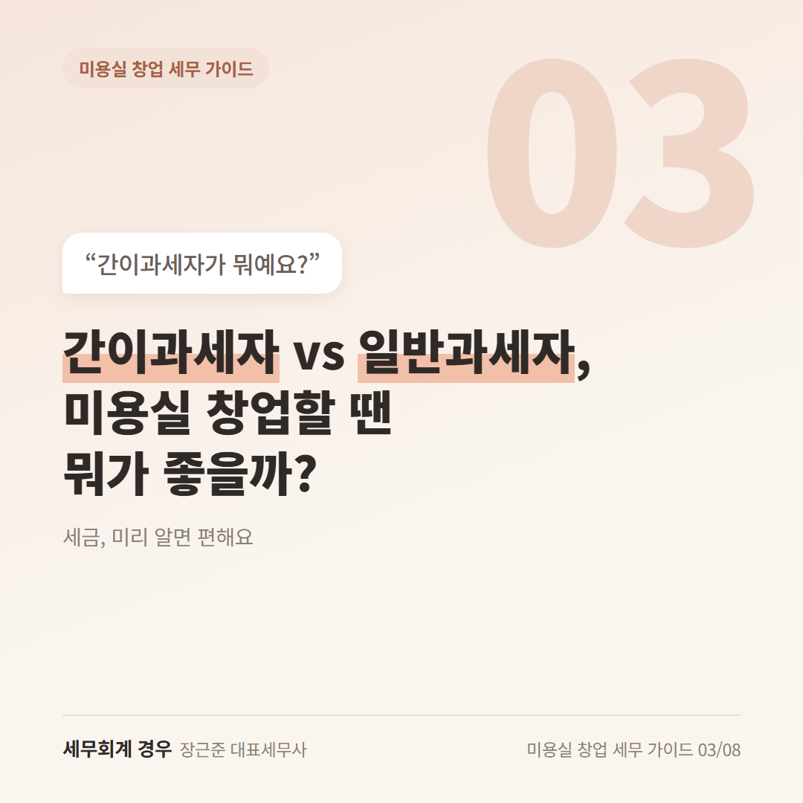
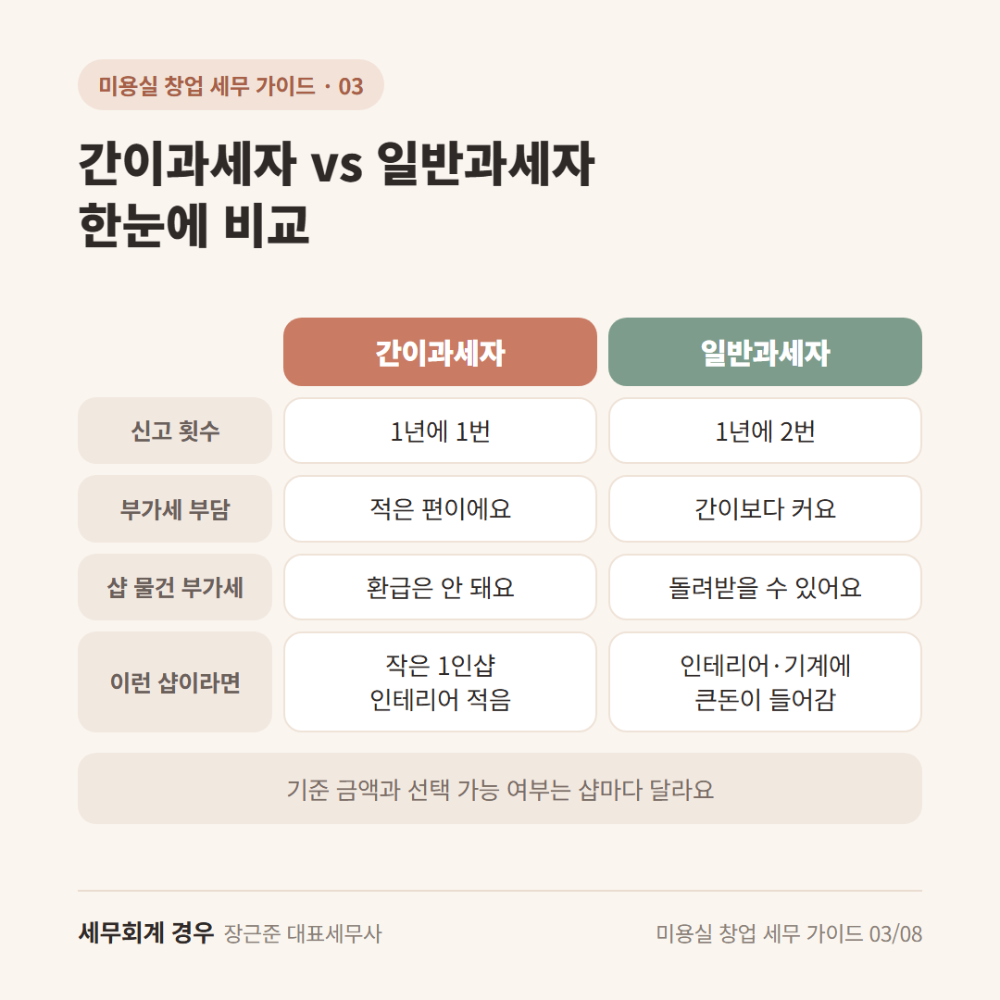
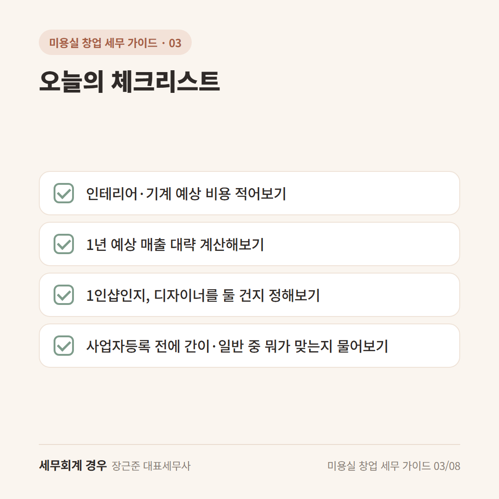

미용실 창업 세무 가이드 · 3번째 글
간이과세자 vs 일반과세자, 미용실 창업할 땐 뭐가 좋을까?

사업자등록 신청서를 쓰다가 손이 멈추는 칸이 있어요.
"간이과세자? 일반과세자? 이게 뭐지?"
미용실 간이과세자와 일반과세자는 부가세를 내는 방식이 달라요.
어느 쪽이 무조건 좋다기보다, 내 샵 상황에 맞는 쪽을 고르면 돼요.
간이과세자: 작은 샵을 위한 간단한 방식
간이과세자는 매출이 크지 않은 샵을 위한 방식이에요.
기준은 1년 매출 약 1억 원 정도예요(2026년 기준).
좋은 점은 이런 거예요.
- 부가세 부담이 일반과세자보다 적어요
- 신고를 1년에 한 번만 하면 돼요
- 매출이 아주 적으면 부가세를 내지 않아도 되는 경우도 있어요
일반과세자: 샵 물건 살 때 낸 부가세를 돌려받을 수 있어요
일반과세자는 신고를 1년에 두 번 해요.
대신 매입세액 공제(샵 물건 살 때 낸 부가세를 빼주거나 돌려받는 것)를 제대로 받을 수 있어요.
간이과세자는 부가세를 많이 냈더라도 돌려받는 환급이 안 돼요.
그래서 인테리어나 샴푸대, 의자처럼 처음에 큰돈이 드는 경우엔
일반과세자가 더 나을 수도 있어요.
미용실은 손님 대부분이 개인이라, 세금계산서를 끊어줄 일은 많지 않아요.
그래서 "처음에 돈이 얼마나 드는지"를 먼저 보시면 고르기 쉬워요.
미용실은 이렇게 생각해보세요
예를 들어 이렇게 나눠 볼 수 있어요.
- 인테리어를 거의 안 하고 작은 1인샵으로 시작 → 간이과세자를 먼저 살펴보기
- 인테리어·기계에 큰돈이 들어감 → 일반과세자로 돌려받는 금액 따져보기
처음 1~2년 예상 매출과 들어갈 비용을 종이에 적어보면 훨씬 선명해져요.
다만 샵 위치나 예상 매출에 따라 간이과세자를 못 고르는 경우도 있어요.
이 부분은 상황마다 달라서 상담으로 확인하시는 게 좋아요.

오늘의 체크리스트

- 인테리어·기계 예상 비용 적어보기
- 1년 예상 매출 대략 계산해보기
- 1인샵인지, 디자이너를 둘 건지 정해보기
- 사업자등록 전에 간이·일반 중 뭐가 맞는지 물어보기
자주 묻는 질문
간이과세자로 시작하면 계속 간이과세자인가요?
매출이 기준보다 커지면 일반과세자로 바뀌어요. 원하면 스스로 일반과세자로 바꿀 수도 있는데, 그러면 한동안 다시 돌아가기 어려워요.
간이과세자도 카드 결제 받을 수 있나요?
네, 받을 수 있어요. 손님 입장에서는 달라지는 게 거의 없어요.
마무리
미용실 간이과세자냐 일반과세자냐는 "처음에 돈이 얼마나 드는지"가 큰 기준이에요.
신청서 칸 하나지만 첫해 세금에 영향을 줄 수 있으니, 사업자등록 전에 한 번 편하게 물어보세요.
개인 상황에 따라 달라질 수 있으니 자세한 내용은 상담으로 확인하세요.